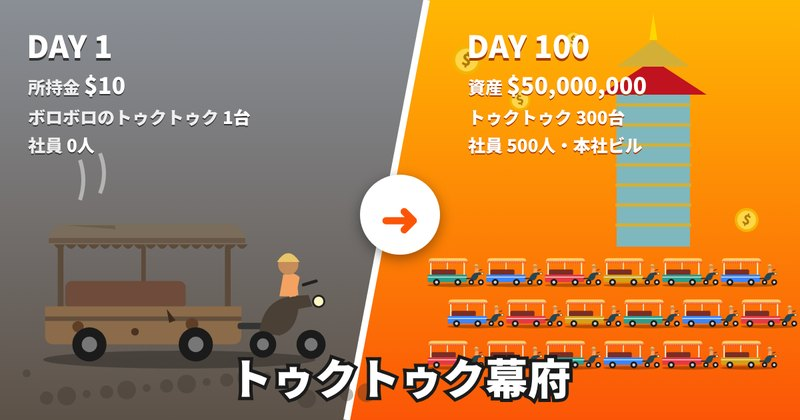

ブラウザで遊べる ゲームセンターA game center in your browserមជ្ឈមណ្ឌលហ្គេម នៅក្នុងកម្មវិធីរុករករបស់អ្នក
19歳の大学生がひとりで作っているゲームを並べました。インストールなし、スマホでもPCでも、今すぐ無料で遊べます。Games made by one developer in Japan. Nothing to install — play free right now on your phone or PC.ហ្គេមដែលបង្កើតដោយអ្នកអភិវឌ្ឍន៍ម្នាក់នៅប្រទេសជប៉ុន។ មិនចាំបាច់ដំឡើងអ្វីទេ — លេងដោយឥតគិតថ្លៃភ្លាមៗ លើទូរស័ព្ទ ឬកុំព្យូទ័ររបស់អ្នក។
すべて無料。名前を決めるだけでランキングに参加できます。All free. Pick a nickname and you are on the leaderboard.ឥតគិតថ្លៃទាំងអស់។ គ្រាន់តែដាក់ឈ្មោះហៅក្រៅ អ្នកនឹងមានឈ្មោះក្នុងតារាងចំណាត់ថ្នាក់។
長押しで包丁を送って、離して切る。細く切るほど本数が増えるけど、1.0mm未満だと麺がぶち切れます。Hold to slide the knife, release to chop. Thinner cuts mean more noodles, but go under 1.0 mm and the noodle snaps.ចុចសង្កត់ដើម្បីរំកិលកាំបិត ហើយលែងដើម្បីកាត់។ កាត់កាន់តែស្តើង បានមីកាន់តែច្រើន ប៉ុន្តែបើស្តើងជាង 1.0 mm មីនឹងដាច់។
からだ・武器・属性の3つの絵文字で戦士を作って、10ターンのオートバトル。友達やランダムな相手とオンライン対戦できます。Build a fighter from three emoji — body, weapon and element — and watch a 10-turn auto battle. Play friends or random opponents online.បង្កើតអ្នកប្រយុទ្ធពី emoji បី — រាងកាយ អាវុធ និងធាតុ — ហើយមើលការប្រយុទ្ធស្វ័យប្រវត្តិ 10 វេន។ លេងជាមួយមិត្តភក្តិ ឬគូប្រកួតចៃដន្យតាមអនឡាញ។
ひとかた —京都人形奇譚—Hitokata: A Kyoto Doll TaleHitokata: រឿងតុក្កតានៃក្យូតូ
サイレンが鳴るたび、ヤツらは増える。夜の京都で日本人形を集めて脱出する、PS2風の和製ホラー。全9マップ。Every time the siren sounds, more of them appear. Collect Japanese dolls and escape night-time Kyoto in a PS2-style horror game. Nine maps.រាល់ពេលស៊ីរ៉ែនបន្លឺឡើង ពួកវាកាន់តែច្រើនឡើង។ ប្រមូលតុក្កតាជប៉ុន ហើយរត់គេចចេញពីទីក្រុងក្យូតូពេលយប់ ក្នុងហ្គេមភ័យរន្ធត់បែប PS2។ មាន 9 ផែនទី។
STAGE 043D経営シミュレーション3D business simហ្គេមគ្រប់គ្រងអាជីវកម្ម 3D
🛺

3D経営シミュレーション3D business simហ្គេមគ្រប់គ្រងអាជីវកម្ម 3D
トゥクトゥク幕府Tuk-Tuk ShogunateTuk-Tuk Shogunate
所持金$10、ボロボロのトゥクトゥク1台からスタート。客を運んで稼ぎ、車を増やし、人を雇って、プノンペン最大の交通会社を目指す。その先には超高難度のホーチミン編・デリー編も。Start with $10 and one battered tuk-tuk. Ferry passengers, buy more vehicles, hire drivers and build Phnom Penh's biggest transport company — then take on brutal Ho Chi Minh City.ចាប់ផ្តើមជាមួយ $10 និងតុកតុកចាស់មួយគ្រឿង។ ដឹកអ្នកដំណើរ ទិញយានបន្ថែម ជួលអ្នកបើកបរ ហើយកសាងក្រុមហ៊ុនដឹកជញ្ជូនធំបំផុតនៅភ្នំពេញ — បន្ទាប់មកប្រកួតនៅទីក្រុងហូជីមិញដ៏សាហាវ។
ビートに合わせて、針がゾーンに重なる瞬間にタップするだけ。叩いた音がそのまま曲になり、つなぐほど音楽が進化。ゲージ満タンで重低音のドロップからFEVERへ。Tap the moment the needle hits the zone — right on the beat. Your taps become the melody, the music builds with your combo, and a full gauge drops you into FEVER.ចុចនៅពេលម្ជុលប៉ះតំបន់ — ត្រូវតាមចង្វាក់។ ការចុចរបស់អ្នកក្លាយជាបទភ្លេង តន្ត្រីកាន់តែខ្លាំងតាមកុំបូ ហើយពេលរង្វាស់ពេញ អ្នកនឹងចូល FEVER។
たまごからかえるのは、見た目が完全ランダムの「せかいに1ぴきだけ」のいきもの。毎日会いに行くと、ことばやあなたの名前を少しずつ覚えていきます。Hatch a pixel creature whose look is fully random — the only one like it in the world. Visit every day and it slowly learns words, and even your name.ញាស់សត្វតូច pixel ដែលរូបរាងចៃដន្យទាំងស្រុង — មានតែមួយគត់ក្នុងលោក។ មកលេងរាល់ថ្ងៃ វានឹងរៀនពាក្យបន្តិចម្តងៗ ហើយថែមទាំងហៅឈ្មោះអ្នកទៀតផង។
DOPA TAP：オンラインランキング（今日・今週・歴代）を追加しました。名前を入れて遊ぶと、結果画面にその場で順位が表示されます。あわせて英語とクメール語にも対応しました。DOPA TAP: added online rankings (today, this week and all time) — enter a name and your rank appears right on the results screen. The game is now also available in English and Khmer.DOPA TAP៖ បានបន្ថែមចំណាត់ថ្នាក់អនឡាញ (ថ្ងៃនេះ សប្តាហ៍នេះ និងគ្រប់ពេល) — បញ្ចូលឈ្មោះ ហើយចំណាត់ថ្នាក់របស់អ្នកនឹងបង្ហាញភ្លាមៗលើអេក្រង់លទ្ធផល។ ហ្គេមនេះឥឡូវមានជាភាសាអង់គ្លេស និងភាសាខ្មែរផងដែរ។
ぴこっと：フレンド機能を追加しました。フレンドコードを交換すると、相手の子が部屋に遊びに来て、その子が覚えたことばを聞いて覚えることもあります。おとなになってしばらくするとたまごを残し、親の色や耳、ことばを受け継いだ次の世代を育てられます（親はアルバムに残ります）。Pikotto: added friends — swap friend codes and your friend's pet comes over to play, and yours may pick up the words it knows. Grown-up pets eventually leave an egg, so you can raise a next generation that inherits colors, ears and words (parents stay in the album).Pikotto៖ បានបន្ថែមមុខងារមិត្តភក្តិ — ប្តូរលេខកូដមិត្តភក្តិគ្នា ហើយសត្វចិញ្ចឹមរបស់មិត្តនឹងមកលេងនៅបន្ទប់អ្នក ហើយសត្វរបស់អ្នកអាចរៀនពាក្យដែលវាចេះ។ សត្វពេញវ័យនឹងទុកពងមួយ ដើម្បីឲ្យអ្នកចិញ្ចឹមជំនាន់បន្ទាប់ ដែលទទួលពណ៌ ត្រចៀក និងពាក្យពីមេ (មេនៅតែមានក្នុងអាល់ប៊ុម)។
ぴこっと：季節イベントを追加しました。クリスマス・お正月・バレンタイン・ハロウィンには部屋が飾りつけられ、当日はプレゼントで限定の着せ替えがもらえます。「うまれて100日」などの記念日にもお祝いがあります。Pikotto: added seasonal events — the room gets decorated for Christmas, New Year, Valentine's Day and Halloween, with limited-edition outfits as gifts on the day. Milestones like "100 days together" are celebrated too.Pikotto៖ បានបន្ថែមព្រឹត្តិការណ៍តាមរដូវ — បន្ទប់ត្រូវតុបតែងសម្រាប់បុណ្យណូអែល ឆ្នាំថ្មី ថ្ងៃនៃក្តីស្រលាញ់ និងហាឡូវីន ហើយនៅថ្ងៃនោះ អ្នកនឹងទទួលបានសម្លៀកបំពាក់ពិសេសជាកាដូ។ ថ្ងៃខួបដូចជា «100 ថ្ងៃជាមួយគ្នា» ក៏មានការអបអរដែរ។
ぴこっと：Xでシェアすると、自分の子の絵がカードで表示されるようになりました。機種変更用の「引き継ぎコード」と、場面ごとに曲が変わるBGM（オン・オフ切り替えつき）も追加しました。Pikotto: sharing on X now shows a card with your own pet. Also added transfer codes for moving to a new device, and background music that changes with each scene (with an on/off switch).Pikotto៖ ពេលចែករំលែកលើ X ឥឡូវនឹងបង្ហាញកាតដែលមានរូបសត្វចិញ្ចឹមរបស់អ្នក។ ក៏បានបន្ថែមលេខកូដផ្ទេរទិន្នន័យ សម្រាប់ប្តូរទៅឧបករណ៍ថ្មី និងតន្ត្រីផ្ទៃខាងក្រោយដែលប្តូរតាមឈុតនីមួយៗ (អាចបិទ/បើកបាន)។
新作「ぴこっと」を掲載しました。ドットのいきものと毎日すごす育成ゲームです。たまごからかえる子は見た目が完全ランダムで、せかいに1ぴきだけ。毎日会いに行くと、ことばやあなたの名前を少しずつ覚えていきます。New game: Pikotto — a daily pixel-pet game. Every creature that hatches has a fully random look, so yours is one of a kind. Visit every day and it slowly learns words, and even your name.ហ្គេមថ្មី៖ Pikotto — ហ្គេមចិញ្ចឹមសត្វ pixel ប្រចាំថ្ងៃ។ សត្វនីមួយៗដែលញាស់ចេញមក មានរូបរាងចៃដន្យទាំងស្រុង ដូច្នេះរបស់អ្នកមានតែមួយគត់។ មកលេងរាល់ថ្ងៃ វានឹងរៀនពាក្យបន្តិចម្តងៗ ហើយថែមទាំងហៅឈ្មោះអ្នកទៀតផង។
ぴこっと：着せ替え（あたま・かお・くび、全17種）と、こうえん・うみ・ほしのおかへの「おでかけ」を追加しました。おでかけ先ではたからもの探しができ、その場所でしか見つからないレアな着せ替えもあります。しばらく会えないとさみしがりますが、会えた瞬間とびきりの笑顔でむかえてくれます。Pikotto: added dress-up (head, face and neck — 17 items) and outings to the park, the beach and Star Hill, where you can dig up treasures and rare outfits. Stay away for a few days and it gets lonely — but the moment you return, it greets you with its biggest smile.Pikotto៖ បានបន្ថែមការផ្លាស់សម្លៀកបំពាក់ (ក្បាល មុខ និងក — 17 មុខ) និងការដើរលេងទៅសួនច្បារ ឆ្នេរ និងភ្នំផ្កាយ ដែលអ្នកអាចជីករកកំណប់ និងសម្លៀកបំពាក់កម្រ។ បើអ្នកមិនមកលេងច្រើនថ្ងៃ វានឹងឯកា — ប៉ុន្តែពេលអ្នកត្រឡប់មកវិញ វានឹងទទួលស្វាគមន៍អ្នកដោយស្នាមញញឹមធំបំផុត។
ぴこっと：ミニゲーム「おやつキャッチ」、毎日かわる「きょうのおねがい」、おやつやもようがえが買える「おみせ」、ペットのしゃしんをXにシェアできる機能を追加しました。Pikotto: added the Snack Catch mini-game, daily requests, a shop for snacks and room decorations, and photos you can share on X.Pikotto៖ បានបន្ថែមហ្គេមតូច «ចាប់នំ» សំណើប្រចាំថ្ងៃ ហាងលក់នំ និងគ្រឿងតុបតែងបន្ទប់ និងរូបថតដែលអាចចែករំលែកលើ X។
運営者情報のページを新しくしました。宵宮ゲームズのこと、公開中のゲーム、広告とデータの扱いをまとめています。Updated the About page with details on Yoimiya Games, our games, and how ads and data are handled.បានធ្វើបច្ចុប្បន្នភាពទំព័រ «អំពីយើង» ជាមួយព័ត៌មានអំពី Yoimiya Games ហ្គេមរបស់យើង និងរបៀបគ្រប់គ្រងការផ្សាយពាណិជ្ជកម្ម និងទិន្នន័យ។
トゥクトゥク幕府：経営タブで過去の日別収支（内訳つき）が見られるようになりました。プレイ中は、ほかの都市に残した会社も社員が営業を続けて稼ぎます。本社・営業所・マネージャーで管理できる人数を大幅に増やし、デリーの交通量を運転しやすく調整しました。Tuk-Tuk Shogunate: past daily results with breakdowns, companies in other cities keep earning while you play, much higher staff management limits, and Delhi traffic tuned to be drivable.Tuk-Tuk Shogunate៖ អាចមើលលទ្ធផលប្រចាំថ្ងៃកន្លងមក ជាមួយព័ត៌មានលម្អិត ក្រុមហ៊ុននៅទីក្រុងផ្សេងទៀតនៅតែរកចំណូលពេលអ្នកលេង ដែនកំណត់គ្រប់គ្រងបុគ្គលិកខ្ពស់ជាងមុនច្រើន ហើយចរាចរណ៍នៅដេលីត្រូវបានកែឲ្យងាយបើកបរ។
トゥクトゥク幕府：新章「デリー編」を追加しました。ホーチミンでLv6になると挑戦でき、ラール・キラーやインド門、コンノート・プレイスを再現した大都市で、信号の少ない大渋滞（牛も歩きます）を走ります。スタッフの働きぶりランキングと下位30%の一括解雇、都市ごとの現地っぽいスタッフ名も追加しました。Tuk-Tuk Shogunate: new chapter "Delhi" — Red Fort, India Gate and Connaught Place, wild traffic with almost no lights (and cows). Also: staff performance rankings with bulk firing, and local staff names per city.Tuk-Tuk Shogunate៖ ជំពូកថ្មី «ដេលី» — Red Fort, India Gate និង Connaught Place ចរាចរណ៍ច្របូកច្របល់ ដែលស្ទើរតែគ្មានភ្លើងស្តុប (និងមានគោផង)។ ក៏បានបន្ថែមចំណាត់ថ្នាក់ការងាររបស់បុគ្គលិក ជាមួយការបណ្តេញចេញជាក្រុម និងឈ្មោះបុគ្គលិកតាមទីក្រុងនីមួយៗ។
トゥクトゥク幕府：3都市それぞれの空気・光・BGM・街の音を作り分けました。ホーチミンとデリーでは、来てすぐにお金の力でライバルを買収しようとすると政府が介入して巨額の制裁金が科されます。税金も強化し、持ち込んだお金には外資特別税がかかります。転生システムは廃止しました。Tuk-Tuk Shogunate: each city now has its own sky, light, music and street sounds. Buying rivals too early in Ho Chi Minh City or Delhi triggers government crackdowns and huge fines; taxes are higher and imported money is taxed daily. The rebirth system was removed.Tuk-Tuk Shogunate៖ ទីក្រុងនីមួយៗឥឡូវមានមេឃ ពន្លឺ តន្ត្រី និងសំឡេងផ្លូវផ្ទាល់ខ្លួន។ ការទិញក្រុមហ៊ុនគូប្រជែងលឿនពេកនៅហូជីមិញ ឬដេលី នឹងធ្វើឲ្យរដ្ឋាភិបាលចូលអន្តរាគមន៍ និងពិន័យយ៉ាងធ្ងន់។ ពន្ធកាន់តែខ្ពស់ ហើយប្រាក់ដែលនាំចូលត្រូវបង់ពន្ធរាល់ថ្ងៃ។ ប្រព័ន្ធកើតជាថ្មីត្រូវបានលុបចោល។
新作「DOPA TAP」を掲載しました。ビートに合わせて針がゾーンに重なる瞬間にタップする、1タップのリズムゲームです。New game: DOPA TAP — a one-tap rhythm game. Hit the zone right on the beat.ហ្គេមថ្មី៖ DOPA TAP — ហ្គេមចង្វាក់ចុចតែម្តង។ ចុចប៉ះតំបន់ឲ្យត្រូវតាមចង្វាក់។
トゥクトゥク幕府：プノンペンとホーチミンを自由に行き来できるようになりました（会社は都市ごとに残ります）。お金を持ち込むと関税で約3分の2が取られます。乗車拒否ボタンも追加し、スマホでの画面表示を見やすくしました。Tuk-Tuk Shogunate: travel freely between Phnom Penh and Ho Chi Minh City (each company stays put); carrying money costs about two-thirds in customs. Added a ride-refusal button and a clearer phone HUD.Tuk-Tuk Shogunate៖ អាចធ្វើដំណើរដោយសេរីរវាងភ្នំពេញ និងហូជីមិញ (ក្រុមហ៊ុននីមួយៗនៅតែនៅទីក្រុងរបស់វា)។ ការយកប្រាក់តាមខ្លួនត្រូវបង់ពន្ធគយប្រហែលពីរភាគបី។ បានបន្ថែមប៊ូតុងបដិសេធអ្នកដំណើរ និងផ្ទាំងបង្ហាញលើទូរស័ព្ទដែលមើលច្បាស់ជាងមុន។
トゥクトゥク幕府：新章「ホーチミン編」を追加しました。プノンペンでLv6になると挑戦でき、資金の半分を持ってベトナムへ。高層ビルの並ぶ広いマップで、強力なライバル3社（引き抜き・妨害・値下げ攻勢・客の横取り）、信号無視の罰金と財産没収、累進課税の法人税・資産税が待っています。ライバルを全社買収すれば完全制覇です。Tuk-Tuk Shogunate: new chapter "Ho Chi Minh City". Reach Lv6 in Phnom Penh to move to Vietnam with half your money — a bigger skyscraper city with three ruthless rival companies, traffic lights with fines and asset seizures, and progressive taxes. Buy out every rival to conquer the city.Tuk-Tuk Shogunate៖ ជំពូកថ្មី «ទីក្រុងហូជីមិញ»។ ឡើងដល់ Lv6 នៅភ្នំពេញ ដើម្បីទៅវៀតណាមជាមួយប្រាក់ពាក់កណ្តាល — ទីក្រុងធំដែលមានអគារខ្ពស់ៗ ក្រុមហ៊ុនគូប្រជែងដ៏សាហាវបី ភ្លើងស្តុបដែលមានការពិន័យ និងការរឹបអូសទ្រព្យសម្បត្តិ និងពន្ធកើនតាមកម្រិត។ ទិញក្រុមហ៊ុនគូប្រជែងទាំងអស់ ដើម្បីដណ្តើមទីក្រុង។
トゥクトゥク幕府：セール中なのに値段が下がっていないことがある不具合、インフルエンサーやアプリの迎車で矢印が消える不具合、ぶつけただけで「遅刻」と評価される不具合を直しました。Tuk-Tuk Shogunate: fixed sale prices not always applying, the guide arrow vanishing on influencer and app pickups, and bumps being rated as "late".Tuk-Tuk Shogunate៖ បានជួសជុលបញ្ហាតម្លៃបញ្ចុះមិនតែងតែត្រូវអនុវត្ត ព្រួញណែនាំបាត់ពេលទៅទទួលអ្នកមានឥទ្ធិពល ឬអ្នកដំណើរតាមកម្មវិធី និងការប៉ះទង្គិចត្រូវវាយតម្លៃថា «យឺត»។
ひとかた：新マップ「伏見稲荷・千本鳥居」「嵐山・竹林の小径」「清水寺・産寧坂」を追加して全9マップになりました。朱の鳥居のトンネルと目の赤い狐の石像、空を覆う竹林の迷路、清水の舞台と入り組んだ坂の路地を逃げ回れます。Hitokata: three new maps — Fushimi Inari's thousand torii, the Arashiyama bamboo grove and Kiyomizu-dera with the Sannenzaka slopes — for nine maps in total.Hitokata៖ ផែនទីថ្មីបី — ទ្វារ torii មួយពាន់នៅ Fushimi Inari ព្រៃឫស្សី Arashiyama និងវត្ត Kiyomizu-dera ជាមួយផ្លូវជម្រាល Sannenzaka — សរុបមាន 9 ផែនទី។
新作「トゥクトゥク幕府 〜みんなでトゥクろう。〜」を掲載しました。プノンペンで$10とトゥクトゥク1台から交通会社を大きくする3D経営シミュレーションです。New game: Tuk-Tuk Shogunate — grow a Phnom Penh transport company from $10 and a single tuk-tuk in this 3D business sim.ហ្គេមថ្មី៖ Tuk-Tuk Shogunate — ពង្រីកក្រុមហ៊ុនដឹកជញ្ជូននៅភ្នំពេញ ចាប់ពី $10 និងតុកតុកមួយគ្រឿង ក្នុងហ្គេមគ្រប់គ្រងអាជីវកម្ម 3D នេះ។
サイト名を「宵宮ゲームズ」に変えて、ネオンのゲームセンター風にデザインを一新しました。We renamed the site to Yoimiya Games and gave it a new neon arcade look.យើងបានប្តូរឈ្មោះគេហទំព័រទៅជា Yoimiya Games ហើយផ្លាស់ប្តូររូបរាងថ្មីបែបហ្គេមអាខេដភ្លើងនីអុង។
EMOJI CLASH の紹介画像を新しくしました。EMOJI CLASH has a new key image.EMOJI CLASH មានរូបភាពសំខាន់ថ្មី។
ひとかた：花見小路通マップの説明文を直しました。Hitokata: fixed the description of the Hanamikoji map.Hitokata៖ បានកែសម្រួលការពិពណ៌នាផែនទី Hanamikoji។
ひとかた：ホーム画面に和風のBGMを追加。敵にやられたあとラジオの音が鳴り続ける不具合を直しました。Hitokata: added eerie Japanese music to the title screen and fixed radio static that kept playing after a game over.Hitokata៖ បានបន្ថែមតន្ត្រីជប៉ុនដ៏គួរឲ្យខ្លាចនៅអេក្រង់ចំណងជើង ហើយបានជួសជុលសំឡេងវិទ្យុរំខាន ដែលនៅតែឮបន្ទាប់ពីចាញ់។
ひとかた：結果をXでシェアできるようにしました。難易度3段階（やさしい・ふつう・悪夢）と称号11種、ランキングの準備、捕まる瞬間の演出と効果音の強化、遊び方の説明、古いスマホ向けの軽量モードを追加しました。Hitokata: share your result on X, 3 difficulty levels, 11 titles, a scarier catch scene, a how-to-play guide and a lite mode for older phones.Hitokata៖ ចែករំលែកលទ្ធផលលើ X កម្រិតលំបាក 3 ងារ 11 ឈុតចាប់ខ្លួនដែលគួរឲ្យខ្លាចជាងមុន ការណែនាំរបៀបលេង និងរបៀបស្រាលសម្រាប់ទូរស័ព្ទចាស់។
ひとかた：還り人それぞれに個性がつきました。鎌の還り人は耳がよく、鉈の還り人は視界が広く、還り子は泣き声で仲間を呼びます。Hitokata: each of the Returned now behaves differently — one hears well, one sees far, and the child calls the others.Hitokata៖ ពួក «អ្នកត្រឡប់មកវិញ» នីមួយៗឥឡូវមានឥរិយាបថខុសៗគ្នា — ម្នាក់ស្តាប់ឮច្បាស់ ម្នាក់មើលឃើញឆ្ងាយ ហើយក្មេងនឹងហៅអ្នកផ្សេងមក។
ひとかたが hitokata.emojiclash.com で遊べるようになりました。Hitokata now lives at hitokata.emojiclash.com.Hitokata ឥឡូវនៅ hitokata.emojiclash.com។
ひとかた：新マップ「高台寺・ねねの道」「花見小路通」「鴨川・先斗町」を追加して全6マップに。地図の表示、「気配」は1回のプレイで3回まで、サイレンは1分ごとに変わりました。Hitokata: three new maps (Kodaiji, Hanamikoji, Kamogawa & Pontocho) for six in total, plus a map screen; hints are now limited to 3 per run and the siren sounds every minute.Hitokata៖ ផែនទីថ្មីបី (Kodaiji, Hanamikoji, Kamogawa & Pontocho) សរុបមាន 6 ផែនទី និងអេក្រង់ផែនទី។ ជំនួយត្រូវបានកំណត់ត្រឹម 3 ដងក្នុងមួយលើក ហើយស៊ីរ៉ែនបន្លឺរៀងរាល់មួយនាទី។
ひとかた：還り人の見た目をリアルなキャラクターに作り直しました。Hitokata: the Returned now have realistic new character models.Hitokata៖ ពួក «អ្នកត្រឡប់មកវិញ» ឥឡូវមានម៉ូដែលតួអង្គថ្មី ដែលមើលទៅដូចពិត។
ひとかた —京都人形奇譚— を掲載しました。Added Hitokata: A Kyoto Doll Tale.បានបន្ថែម Hitokata: រឿងតុក្កតានៃក្យូតូ។
このサイトを公開しました。This site is now open.គេហទំព័រនេះបានបើកដំណើរការហើយ។
極細そば切り名人が soba.emojiclash.com に引っ越しました。記録はボタン1つで引き継げます。Ultra-Thin Soba Master moved to soba.emojiclash.com. Bring your records over with one tap.Ultra-Thin Soba Master បានផ្លាស់ទៅ soba.emojiclash.com។ អាចនាំកំណត់ត្រារបស់អ្នកមកជាមួយ ដោយចុចតែម្តង។
EMOJI CLASH が emojiclash.com で遊べるようになりました。EMOJI CLASH now lives at emojiclash.com.EMOJI CLASH ឥឡូវនៅ emojiclash.com។
極細そば切り名人に、タイムアタック・一本勝負・ゴーストバトル・称号を追加しました。Ultra-Thin Soba Master added time attack, one-shot, ghost races and titles.Ultra-Thin Soba Master បានបន្ថែមការប្រណាំងពេលវេលា របៀបកាត់តែម្តង ការប្រណាំងជាមួយ Ghost និងងារ។